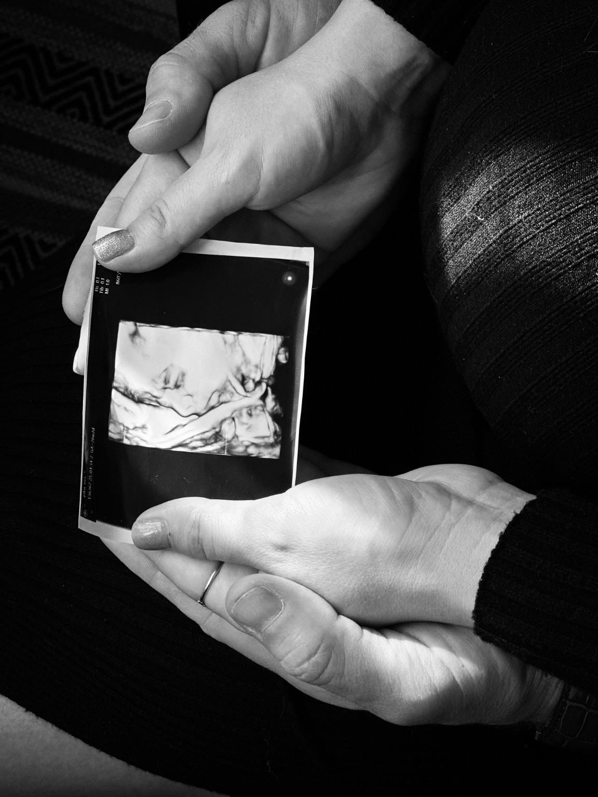
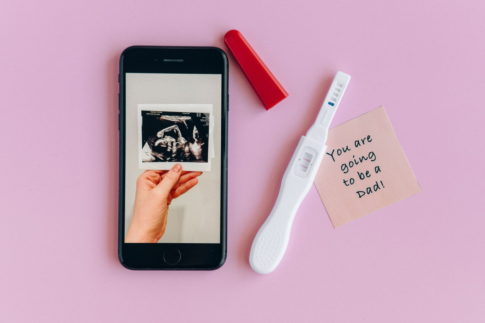

灵活服务
需要多少，就选择多少
您可以选择单次咨询、秘书/翻译与机构沟通，也可以选择打包式全程服务，由我们陪您参与主要步骤并协助推进每一个里程碑。
美宝管家 · YOUR SURROGACY BUTLER
美宝管家特别关注 LGBTQ+ 准父母、同性伴侣、单身人士与跨境家庭在美国通过辅助生殖技术（ART）组建家庭时面对的复杂流程。我们陪您理解选择、协调关键步骤、减少信息差，让医疗、法律、保险和跨机构沟通不再成为一个人扛着走的旅程。
FAMILY, YOUR WAY
我们特别理解 LGBTQ+ 准父母、同性伴侣、单身人士与跨境家庭，在辅助生殖过程中不仅要处理医疗和法律流程，也常常需要面对身份、语言、家庭结构与制度差异带来的额外压力。

我们是谁
美宝管家的创始人也经历过辅助生殖与组建家庭的旅程。我们知道，当家庭路径不符合传统脚本时，信息差、身份焦虑、跨文化沟通和制度陌生感会被进一步放大。我们经历过挑战、失望、失落与失败，也最终迎接到了自己的宝宝。我们希望把亲身经验转化为更实用、更尊重多元家庭的陪伴与协调。
灵活服务
您可以选择单次咨询、秘书/翻译与机构沟通，也可以选择打包式全程服务，由我们陪您参与主要步骤并协助推进每一个里程碑。
我们的定位
我们的工作重点是帮助准备中的父母理解信息、提出问题、协调沟通与推进流程。医疗决定由医疗专业人员负责，法律意见由具备相关执业资格的律师提供。
为什么选择我们
我们的服务以 LGBTQ+ 与多元家庭为重要服务对象，同时欢迎所有希望来美国通过辅助生殖组建家庭的准父母。无论您是同性伴侣、异性伴侣、单身人士，还是不希望用传统标签定义自己的家庭，我们都把您的家庭目标放在流程中心。
不仅理解流程，也理解 LGBTQ+ 准父母在身份、家庭结构、跨文化沟通与制度环境中可能面对的额外压力。
帮助您整理信息、提出问题、跟进节点，并在复杂的多方协作中持续以您的家庭目标为中心。
协助您与诊所、代理机构、孕母、律师、保险及其他相关方保持清晰沟通。
把复杂流程拆成可理解、可追踪的步骤，并提醒您哪些问题需要向专业人员确认。
为什么考虑美国
美国的妊娠载体（gestational carrier）安排由各州法律、判例和政策分别管理，并不存在一部统一的联邦代孕法。很多州允许并规范相关安排，另一些州规则不同或限制较多，因此具体州别、合同结构和亲权程序必须由专业律师确认。
部分州有较成熟的妊娠载体合同和亲权确认机制，但规则因州而异。准父母和孕母应分别获得独立法律意见。
规范的第三方辅助生殖通常涉及生殖医学筛查、心理评估/咨询及法律咨询等环节，以支持知情同意和各方权益。
美国部分地区对 LGBTQ+ 家庭、同性伴侣与单身准父母提供较成熟的第三方辅助生殖服务，但实际可行性仍取决于州法、诊所政策和个案条件。
专业参考：American Society for Reproductive Medicine (ASRM) 关于妊娠载体实践、伦理与美国政策的公开资料。本站不提供医疗或法律意见。
需要打交道的部门和个体
大概流程和时间线
每个家庭的路径会因胚胎准备、州别、诊所、孕母匹配、保险和法律程序而不同。以下用于建立整体概念，不代表固定顺序或时间承诺。
明确家庭结构、已有胚胎/配子情况、目标州、预算框架和需要的支持范围。
选择生殖诊所，完成必要的医疗咨询、胚胎/配子相关准备与筛查。
进入匹配，并按诊所与专业指南完成相关医疗和心理评估。
各方分别与律师沟通合同、亲权安排及费用/代管账户机制。
由医疗团队负责胚胎移植、确认妊娠和后续产科照护；同时持续处理保险、法律和沟通事项。
协调医院、律师及相关机构，按适用州法推进出生及亲权相关手续。
根据家庭情况处理证件、保险、旅行及其他后续事项；跨境家庭尤其需要提前咨询合格律师。
法律和医疗保险
美国妊娠载体法律高度州别化。合同可执行性、亲权确认方式、婚姻/遗传关系要求以及外国准父母资格都可能不同。2026 年部分州还出现了针对外国准父母的新限制，因此在选择州、机构和孕母之前就应咨询熟悉第三方辅助生殖的律师。
保险安排可能涉及孕母现有保险、专门购买的保单、孕期与分娩费用、宝宝出生后的保险，以及不承保项目。不要假设任何保单自动覆盖代孕相关费用，应由保险专业人员和相关机构逐项核实。
出生后的一些事
建议提前建立出生后的清单，包括亲权文件、出生证明、宝宝医疗保险、儿科安排、医院出院流程，以及跨境家庭可能涉及的旅行证件和本国/地区的法律手续。具体要求因州、国籍与家庭情况而异，应由相关律师及政府机构确认。
预算和费用
与其相信一个看似简单的“包办数字”，更重要的是先看清费用来自哪里、哪些是固定项目、哪些会因州别、保险、医疗和个案变化而波动。美宝管家的服务费不包含以下第三方费用；具体预算应在确定路径后逐项核实。
生殖诊所、胚胎与配子相关服务、筛查、移植及其他医疗项目。
代理机构、孕母补偿与合理费用、差旅及孕期相关支持。
双方律师、亲权程序、保险核查、保单及可能的未承保项目。
代管账户、旅行、医院与出生手续，以及跨境家庭后续文件安排。

我们的服务
按次收费
咨询（一小时）：通过电话或视频会议回答流程、经验和协调层面的问题；医疗专业问题需向医生咨询。
秘书 / 翻译（按需）：根据您的需要，协助参加与医院、代理机构、孕母、律师或其他相关机构的会议及邮件沟通。
全包项目
如果您希望把整个协调旅程交给我们，我们会根据您的情况制定服务方案和费用，并全程参与主要节点、协助沟通和整理待办事项。具体服务范围与收费以双方确认的方案为准。
邮件咨询详细价目 →相关时事
以下为近期真实报道与专业政策资料。点击标题可前往原始来源。
德州议员讨论针对外国准父母使用德州孕母的潜在限制，显示跨境家庭尤其需要关注州级政策变化。
阅读原文 ↗ASSOCIATED PRESS · 2026-08一宗跨州妊娠载体争议进入法院程序，凸显合同、医疗决定与亲权安排可能产生的复杂法律问题。
阅读原文 ↗ASRM · 2026ASRM 汇总了近期针对国际/外国准父母的州级及联邦立法动向，包括 2026 年佛罗里达州的新规定。
查看专业政策资料 ↗ASRM · POLICY RESOURCE专业资料介绍美国妊娠载体安排的政策环境，以及州法差异带来的实际影响。
查看专业资料 ↗常见问题 · FAQ
以下回答用于帮助您建立整体概念。美国妊娠载体、亲权、保险和跨境安排高度依赖州别与个案；涉及医疗、法律、保险或身份问题时，请以相应专业人员和政府机构的个案意见为准。
不能用一个全国统一的“合法/不合法”回答。美国妊娠载体安排主要由各州的成文法、判例和政策管理，没有一部统一适用于全国的联邦代孕法。不同州对合同、亲权程序、准父母资格等要求可能明显不同，因此应先确定州别，再由熟悉第三方辅助生殖的律师评估。
不能仅凭“外国人”身份给出全国统一答案。2026 年美国已经出现针对部分外国准父母的州级限制和联邦立法提案，因此国籍、居住地、选择的州以及家庭结构都可能影响可行性。跨境家庭在签约、匹配或付款前，应先核实目标州的最新法律。
妊娠载体是男性同性伴侣和单身男性可能使用的家庭组建路径之一，通常还涉及精子、卵子来源、IVF、胚胎以及妊娠载体等环节。实际方案由生殖诊所根据医疗情况制定，法律上的亲权安排则取决于适用州法和个案情况。
在部分美国司法辖区和生殖医疗体系中，单身男性可以考虑通过卵子捐赠、IVF 与妊娠载体组建家庭。但诊所政策、州法、亲权程序和跨境文件要求并不完全相同，因此需要医疗与法律两条线分别确认。
现代美国生殖医学中常见的是 gestational carrier（妊娠载体）：通过 IVF 将胚胎移植到孕母子宫，孕母与胚胎没有遗传关系。传统代孕则使用孕母自己的卵子，因此孕母与孩子存在遗传关系，法律和伦理问题也更复杂；现代专业指南主要讨论妊娠载体安排。
常见环节包括需求与方案梳理、选择生殖诊所、配子/胚胎准备、孕母匹配与评估、法律合同与资金安排、胚胎移植、孕期协调、出生与亲权手续，以及出生后的保险和跨境文件。实际顺序和所需时间会因诊所、州别、胚胎情况、匹配和法律程序而变化。
不一定存在适用于所有家庭的固定先后顺序。您的配子来源、是否需要卵子或精子捐赠、诊所要求、匹配机构规则和目标州都会影响路径。更实用的做法是先梳理家庭情况和已有资源，再让生殖诊所及相关专业人员确认适合的顺序。
不要只比较一个报价或成功率数字。可以分别核实诊所的第三方生殖经验、孕母筛查流程、沟通机制、合同与资金安排、保险核查方式，以及出现医疗或法律变化时由谁负责协调。孕母本人也应拥有独立的医疗决策权、知情同意和独立法律支持。
专业指南强调妊娠载体安排中的医疗筛查、心理评估/咨询、知情同意和法律咨询。具体项目由生殖诊所及相关专业人员根据个案执行。心理评估并不是为了“挑一个听话的人”，而是帮助各方理解安排、压力、边界和潜在心理社会问题。
第三方辅助生殖存在明显的利益与权利边界。ASRM 指南强调妊娠载体应获得独立法律顾问，并建议相关参与方由熟悉适用州第三方生殖法律的律师分别获得法律意见。具体法律代表安排应由当地律师确认。
不能这样假设。保险可能涉及孕母已有保单、另外购买的保障、孕期与分娩、并发症、新生儿出生后的保险以及各种 exclusions。应在流程早期逐项核查，而不是等到怀孕或生产时才确认。
不存在适用于所有家庭的单一总价。费用可能来自生殖医疗和实验室、卵子或精子相关服务、孕母及代理支持、律师、保险、Escrow、差旅、孕期和出生后事务等。不同州、医疗方案、保险情况和个案变化都可能显著改变预算，因此本站不提供一个看似确定但可能误导的“包办数字”。
胚胎移植数量属于医疗决定，应由生殖医学团队结合胚胎和个案情况讨论。ASRM/SART 的妊娠载体专业指导倾向单胚胎移植，以降低多胎妊娠相关的产科和新生儿风险；不要把“双胚胎”简单理解为更划算或一定更容易成功。
亲权确认方式取决于适用州法和具体安排，不能假设仅凭合同或出生事实就自动完成所有法律手续。法律合同和亲权程序应尽早由熟悉第三方辅助生殖的律师规划，并与出生医院等相关方协调。
不要把这一点当作网站或服务方能够保证的结果。出生公民权、护照、移民及跨境身份问题涉及当时有效的美国法律、政府政策、诉讼和家庭具体情况。尤其在政策快速变化时期，应直接向具备资格的移民/亲权律师及相关政府机构核实最新要求。
除了医院出院和儿科安排，还可能涉及亲权文件、出生证明、新生儿保险、护照或旅行文件，以及回到居住国/地区后的身份和法律手续。跨境家庭最好在预产期前就建立文件清单，并分别向美国和目的地司法辖区的合格专业人员确认。
美宝管家的定位是面向准父母的咨询、信息梳理、翻译、跨机构沟通和旅程协调支持。我们不替代生殖医生、律师、保险专业人员或政府机构，也不提供医疗诊断或个案法律意见。需要专业判断的问题，我们会帮助您识别应该向谁确认。
不知道自己的情况应该从哪一步开始？
填写咨询表 →每一个家庭的路径都可以不同。
您不需要先符合某种模板，才值得获得完整的支持。联系我们
您可以简单介绍自己的家庭情况、目前进度，以及最希望先厘清的问题。无需一次把所有事情想明白；您可以直接发送邮件，也可以打开美宝管家咨询表，留下您的基本情况和当前进度。